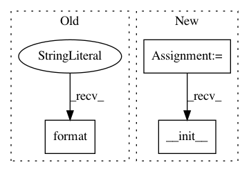

16246c8a9d84c875208a5e370da87888e799dd96,src/python/pants/pantsd/watchman.py,Watchman,__init__,#Watchman#Any#Any#Any#Any#Any#Any#Any#,31
Before Change
self._startup_timeout = startup_timeout
self._timeout = timeout
self._state_file = os.path.join(self._watchman_work_dir, "{}.state".format(self.name))
self._log_file = os.path.join(self._watchman_work_dir, "{}.log".format(self.name))
self._sock_file = socket_path_override or os.path.join(self._watchman_work_dir,
"{}.sock".format(self.name))
After Change
timeout=self._startup_timeout)
def _is_valid_executable(self, binary_path):
return os.path.isfile(binary_path) and os.access(binary_path, os.X_OK)
def _normalize_watchman_path(self, watchman_path):
if not self._is_valid_executable(watchman_path):
raise self.ExecutionError("invalid watchman binary at {}!".format(watchman_path))
return os.path.abspath(watchman_path)
def _maybe_init_metadata(self):
safe_mkdir(self._watchman_work_dir)
// Initialize watchman with an empty, but valid statefile so it doesn"t complain on startup.
safe_file_dump(self._state_file, "{}")
In pattern: SUPERPATTERN
Frequency: 3
Non-data size: 3
Instances
Project Name: pantsbuild/pants
Commit Name: 16246c8a9d84c875208a5e370da87888e799dd96
Time: 2017-11-08
Author: stuhood@twitter.com
File Name: src/python/pants/pantsd/watchman.py
Class Name: Watchman
Method Name: __init__
Project Name: brian-team/brian2
Commit Name: cd384495f71d0ae1c137bcac499ebf83e694bfa8
Time: 2015-08-27
Author: marcel.stimberg@inserm.fr
File Name: brian2/core/clocks.py
Class Name: Clock
Method Name: __init__
Project Name: Microsoft/nni
Commit Name: 0b9d6ce6d1cf6515c5b553a61f78cd333bf4700f
Time: 2020-06-29
Author: 27178119+squirrelsc@users.noreply.github.com
File Name: tools/nni_trial_tool/log_utils.py
Class Name: RemoteLogger
Method Name: __init__